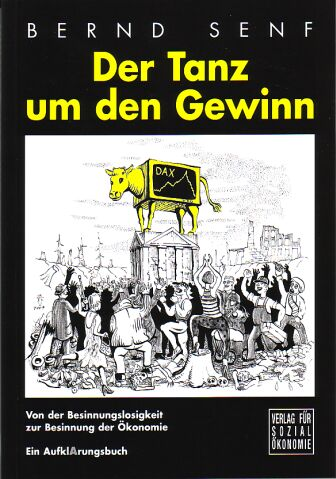

| Home
| Vorwort | Inhalt
| Von der Besinnungslosigkeit zur Besinnung der Ökonomie
| Fließendes Geld und Heilung des sozialen Organismus |
|
 |
Bernd Senf legt hier mehrere Aufsätze über tiefere
wirtschaftliche Ursachen globaler Fehlentwicklungen vor. In allgemein
verständlicher Weise wird herausgearbeitet, dass die sich verschärfenden
Krisen verankert sind in der problematischen Ermittlung des
einzelwirtschaftlichen Gewinns, um den sich weltweit das Wirtschaften
dreht. Darüber hinaus geht es um grundlegende Probleme des bestehenden
Geld- und Zinssystems und um Geheimnisse und Konsequenzen der
Geldschöpfung des Bankensystems. Aus der Analyse dieser Zusammenhänge
ergeben sich notwendige Veränderungen, wenn eine weitere Zuspitzung der
Krisen vermieden werden soll.
|
|
|
|
||
|
Das vorliegende Buch besteht aus einer Sammlung längerer Aufsätze, die über einen Zeitraum von mehreren Jahren entstanden sind und (mit einer Ausnahme) hiermit erstmals veröffentlicht werden. Sie beziehen sich auf unterschiedliche Aspekte tief verankerter und kollektiv verdrängter Ursachen globaler Fehlentwicklungen - vor allem im Bereich des Geldsystems. In dem Aufsatz „Der Tanz um den Gewinn - Von der Besinnungslosigkeit zur Besinnung der Ökonomie" geht es um die Frage, was eigentlich in der wesentlichen Orientierungsgröße verborgen ist, um die sich in marktwirtschaftlich-kapitalistischen Systemen große Teile der Wirtschaft und Gesellschaft drehen. Auf allgemein verständliche Art wird heraus gearbeitet., welche gesamtwirtschaftlichen, gesellschaftlichen und ökologischen Entwicklungen sich aus der einzelwirtschaftlichen Gewinnorientierung ergeben. Daraus wird erkennbar, in welcher Richtung die Grundlagen der Gewinnermittlung verändert werden müssten, um dem Wirtschaften auch einen gesamtwirtschaftlichen, sozialen und ökologischen Sinn zu geben - woran es ihm bisher mangelt. Was das Geldsystem anlangt, so gibt es - auch unter Geldsystemkritikern - erhebliche Kontroversen darüber, welches die wesentlichen Problempunkte sind und wo entsprechende Ansatzpunkte für konstruktive Veränderungen liegen können. Der Aufsatz „Kontroversen um das Geld" macht den Versuch, die unterschiedlichen Sichtweisen heraus zu arbeiten und ihre scheinbare Unvereinbarkeit zu überwinden. Er will auch dazu beitragen, die Geheimnisse der Geldschöpfung von Zentralbanken und Geschäftsbanken aufzudecken, die bisher auf erstaunliche Weise gehütet worden sind. Für große Teile der Gesellschaft hat die Problematik der Geldschöpfung - ebenso wie die des Zinses und des Gewinns - immer noch Tabu-Charakter. Angesichts der sich zuspitzenden Krisen scheint es mir allerdings dringend geboten, diese Tabus anzurühren, weil nur so die Richtung notwendiger Veränderungen des Geldsystems erkennbar wird. Ein weiterer Teil dieses Buches stellt erstaunliche
Bezüge her zwischen dem Fließen des Geldes in einer Wirtschaft und dem
Fließen der Lebensenergie im menschlichen Organismus bzw. in der Natur.
In dem (an anderen Stellen schon veröffentlichten) Aufsatz „fließendes
Geld und Heilung des sozialen Organismus - Gemeinsamkeiten zwischen Viktor
Schauberger, Wilhelm Reich und Silvio Gesell" geht es um. die
Ursachen und Konsequenzen eines blockierten Fließprozesses - und um die
These: „Die Lösung (der Blockierung) ist die Lösung". Aus dieser Analyse wird deutlich, welchen „Wahnsinn" die durch den Neoliberalismus propagierte und durch WTO, IWF und Weltbank durchgesetzte Politik des Niederreißens nationalstaatlicher Schutzhüllen - insbesondere gegenüber den spekulativen Kapitalströmen - bedeutet. Die Dramatik der dadurch bewirkten Entwicklung ist von anderen eindrucksvoll, aber auch erschütternd beschrieben worden, u.a. von Joseph Stiglitz („Die Schatten der Globalisierung") oder von Michel Chossudovsky („Global - Brutal"). Sie liefert ganze Länder und Völker schutzlos den spekulativen Launen und Manipulationen der internationalen Finanzmärkte aus und hinterlässt soziale und ökonomische Trümmerfelder, die wesentlich mit dazu beitragen, den Boden für Gewaltausbrüche zu bereiten. Solange die „monetäre Kernspaltung" (die Spaltung
des Geldes in Tauschmittel und Spekulationsmittel) nicht überwunden wird,
wird es immer wieder destruktive Kettenreaktionen an den internationalen
Finanzmärkten geben - und die Gefahr eines Super-Gaus des
Weltfinanzsystems. Besser wäre es, die Welt (oder mindestens wesentliche
Entscheidungsträger) kämen vorher zur Besinnung - und zur Einsicht in
die wesentlichen
|
||
|
|
||
|
Inhalt Verzerrte Aussagekraft von Gewinnen im Sozialismus Die Not-Wendigkeit einer sozial-ökologischen Besinnung der Ökonomie Anmerkungen B) Kontroversen um das Geld Die Konferenz von Steyerberg 2000 Silvio Gesells Konzept eines staatlichen Währungsamts mit zinsfreier Geldemission Giralgeldschöpfung der Geschäftsbanken - Mythos oder Realität? Weltwirtschaftskrise 1929 und die Diskussion um ein „100%-Money" Geld und Magie - Hans Christoph Binswanger zur Geldschöpfung Die kollektive Verdrängung der Geld(schöpfungs)- und Zinsproblematik Anmerkungen C) Fließendes Geld und Heilung des sozialen
Organismus Gemeinsamkeiten zwischen Schauberger, Reich und
Gesell D) Börsenfieber und kollektiver Wahn Impressionen vom Börsengeschehen Gemeinsames Muster individuellen und kollektiven Wahns Individuelle Panzerung und gespaltener Energiefluss - Ergebnisse der Schizophrenieforschung von Wilhelm Reich Gespaltener Geldfluss und Wirtschaftskrisen Die Spaltung des Geldflusses in Realwirtschaft und spekulative Finanzmärkte Ursachenbehandlung oder Symptombekämpfung? Der Funktionswandel der Finanzmärkte: Von der Finanzierung zur Spekulation Die Krise des Weltfinanzsystems - auf dem Weg in den Super-Gau? Die Suche nach Sündenböcken als Personalisierung der Systemkrise Gespaltener Geldfluss - gespaltener Energiefluss: Funktionelle Identität zwischen Börsengeschehen und individuellem Wahn Anmerkungen |
||
|
|
||
|
Der Tanz um den Gewinn
In marktwirtschaftlich-kapitalistischen Systemen ist der Gewinn die wesentliche Orientierungsgröße, an der sich das Wirtschaften privater Unternehmen ausrichtet. Nach dem Zusammenbruch der sozialistischen Systeme und im Zuge der Globalisierung gilt dieses Prinzip mittlerweile weltweit. Der Gewinn bietet einen Anreiz, weil die Unternehmen über ihn (nach Steuerabzug) verfügen können, zum Beispiel für Investitionen. Ihm kommt erhebliche Bedeutung zu im Verhältnis einzelner Unternehmen zu deren Konkurrenz – an den Bezugs- und Absatzmärkten ebenso wie an den Kreditmärkten und Aktienbörsen. Verluste bewirken dem gegenüber einen Druck auf die Unternehmen, ihre Kosten zu senken bzw. ihre Erlöse zu erhöhen, um wieder Gewinn zu erwirtschaften – andernfalls droht ihr Zusammenbruch. Es erscheint wie eine Selbstverständlichkeit: „Gewinne sind gut, Verluste sind schlecht“, oder: „Gewinn-Unternehmen sind gesund, Verlust-Unternehmen sind krank“. Wenn alles Wirtschaften auf die Erzielung
möglichst hoher Gewinne (und die Vermeidung von Verlusten) ausgerichtet
ist und Gewinn oder Verlust über Leben oder Tod von Unternehmen
entscheiden, dann sollten diese einzelwirtschaftlichen Größen auch eine
hohe Aussagekraft in Bezug auf gesamtwirtschaftliche, soziale und ökologische
Konsequenzen des Wirtschaftens haben. Merkwürdigerweise
wird aber die Frage nach der Aussagekraft von Gewinnen kaum gestellt,
weder in den Schulen und Universitäten, nicht einmal in den
Wirtschaftswissenschaften, noch in der Politik oder in den Medien. Statt
dessen tanzen große Teile der Gesellschaft besinnungslos um diesen von
Menschen geschaffenen Gott wie um das Goldene Kalb im Alten
Testament (2. Mose 32, 1 - 6). An die Stelle von Besinnungslosigkeit
sollte eine grundlegende Besinnung der Ökonomie treten: die Frage nach
dem Sinn des Wirtschaftens und seiner wesentlichen Grundlagen und
Grundbegriffe. Was also drückt sich eigentlich in den Gewinnen aus? Eine Aufklärung darüber erfordert Einblicke von der Oberfläche in die Tiefe, eine Art „Tiefenökonomie“: die Auflösung der einzelnen Bestimmungsgründe des Gewinns und die Aufdeckung dessen, was sich in ihnen verbirgt. Gewinne ergeben sich rein rechnerisch aus der Differenz von Erlösen (= Menge mal Preis der Produkte) minus Kosten (= Menge mal Preis der Einsatzfaktoren): Gewinn = Erlös minus Kosten Wenn man den Gewinn zunächst von der Kostenseite her aufrollt, ergeben sich im wesentlichen die Kosten für vier Einsatzfaktoren: Maschinen, Material, Arbeitskraft, Geld. In den Maschinenkosten sind die so genannten „kalkulatorischen Abschreibungen“ enthalten – ein sehr sinnvolles Prinzip (nicht zu verwechseln mit den „steuerlichen Abschreibungen“, die der Gewinnverschleierung und der Steuerersparnis gegenüber dem Finanzamt dienen können): Der Abnutzung der Maschinen und den notwendigen Ersatzinvestitionen zur Bestandserhaltung des Produktionsapparats wird Rechnung getragen. Ganz anders bei den Materialkosten: Am Beispiel einer Möbelfabrik lässt sich verdeutlichen, dass zwar Sorge und Rechnung getragen wird für den Ersatz der Holzbretter aus dem Sägewerk, nicht aber für den Ersatz der abgeholzten Wälder am Anfang der Produktionskette – an der Nahstelle zwischen menschlicher Produktion und Natur. Bis heute wird in weiten Teilen der Welt ohne Rücksicht auf die Bestandserhaltung der Natur Raubbau betrieben (und dies nicht nur in der Holzwirtschaft), ohne dass die so verursachten Verluste an den Beständen der Natur in die einzelwirtschaftliche Kosten- und Gewinnermittlung eingehen. Was als Gewinn erscheint, sind zum Teil nur Schein-Gewinne, sind unterschlagene Verluste – eine gigantische Bilanzfälschung seit etwa zweihundert Jahren bürgerlichen Eigentumsbegriffs im Kapitalismus (erstmals gesetzlich verankert im Code Napoleon, dem ersten Bürgerlichen Gesetzbuch). Dadurch wird Raubbau an der Natur nicht nur legalisiert, sondern mit höheren Gewinnen honoriert – sofern es keine ökologischen Errungenschaften gibt, die dieser in der „freien Marktwirtschaft“ angelegten Tendenz Schranken setzen. Bei den Arbeitskosten sieht es ähnlich dramatisch aus: In Ländern, in denen es keine sozialen Errungenschaften gibt (wie Sozialversicherungen oder Tarifrecht), bilden sich die Löhne durch das „freie Spiel der Kräfte von Angebot und Nachfrage“ an den Arbeitsmärkten – und werden von der herrschenden (neoklassischen) Wirtschaftstheorie bzw. vom Neoliberalismus „Gleichgewichtslöhne“ genannt. Unter bestimmten Bedingungen (zum Beispiel der Überflutung der Arbeitsmärkte mit materiell entwurzelten und Arbeit suchenden Menschen) können die Löhne allerdings zu Hungerlöhnen werden – wie im Frühkapitalismus und heute in der Zweiten und Dritten Welt. Die einzelwirtschaftlichen Arbeitskosten tragen also in keiner Weise hinreichend Sorge und Rechnung für die Bestandserhaltung des Einsatzfaktors Arbeitskraft bzw. für die materielle Existenzsicherung der dahinter stehenden Menschen. Die schrankenlose Gewinnorientierung sorgt zwar für die Bestandserhaltung des toten Produktionsapparats, nicht aber der lebenden Einsatzfaktoren Natur und Mensch. Deren Regeneration bzw. Reproduktion wird in der einzelwirtschaftlichen Kosten- und Gewinnermittlung“ grundsätzlich missachtet. Die eigentümliche (Un-)Ordnung der „freien Marktwirtschaft“ gewährt den Eigentümern die Freiheit zum ökologischen und sozialen Raubbau zwecks Vermehrung ihres Eigentums. Sie besitzen zwar Eigentumsrechte und werden darin vom Staat geschützt, sind aber von einer sozialen und ökologischen Sorgfaltspflicht, die es in anderen Gesellschaften gab (und zum Teil noch gibt) weitestgehend entbunden. Die grundsätzliche Lebensfeindlichkeit der kapitalistischen Ökonomie liegt noch dramatischer und besonders tief verborgen im Zins, der als Kreditzins in die einzelwirtschaftlichen Geld- bzw. Finanzierungskosten einfließt. Durch ihn wird das eingesetzte Geldkapital nicht nur in seinem Bestand erhalten, sondern sogar vermehrt, und dies noch – durch Zinseszins – in exponentiell wachsendem Maße. In der Natur und im Menschen ist exponentielles Wachstum auf Dauer immer destruktiv – zum Beispiel das Wachstum des Tumors bei Krebs. Gesamtwirtschaftlich wirkt der Zins wie der Krebs des sozialen Organismus. Indem er (als leistungsloses Einkommen) die Geldvermögen exponentiell wachsen lässt, müssen spiegelbildlich dazu die Schulden (und damit auch die jährlich auf zu bringenden Zinslasten) an anderer Stelle des Gesamtsystems exponentiell anwachsen – womit auf Dauer kein reales Wachstum des Sozialprodukts Schritt halten kann. Die Folge davon ist, dass die Zinslasten einen immer größeren Teil des Sozialprodukts auffressen und unter dem Druck der Gläubiger immer mehr Schuldner (einschließlich dem Staat) in den Zusammenbruch getrieben werden – bis der soziale Organismus der Gesellschaft unter wachsenden sozialen Spannungen in Gewalt auseinander bricht. Wie kann die Ökonomie zur Besinnung kommen und mit Sinn gefüllt werden? Indem das sinnvolle Prinzip der Bestandserhaltung nicht nur auf den toten Einsatzfaktor Maschinen angewendet wird, sondern gleichermaßen auf die lebendigen Einsatzfaktoren Natur und Mensch: durch die Verankerung einer „Natur-Abschreibung“ bzw. einer „Sozial-Abschreibung“ in der einzelwirtschaftlichen Kosten- und Gewinnermittlung. Und indem die Überhöhung des Kapitals durch den Zins abgebaut wird – durch Überwindung des Zinssystems und die Schaffung alternativer Geld- und Tauschsysteme ohne Zins. Ansätze in dieser Richtung gibt es schon (Silvio Gesell, Helmut Creutz, Margrit Kennedy, Bernard Lietaer). Erst wenn die Grundbegriffe und Grundorientierungen der Ökonomie mit ökologischem und sozialem Sinn gefüllt werden, kann das Wirtschaften in den Dienst von Mensch und Natur gestellt werden – anstatt umgekehrt. Was die in weiten Bereichen geschundene Natur und die geschundene Menschheit dringend brauchen, sind Wirtschaftssysteme im Einklang mit
Mensch und Natur – anstatt gegen sie. Buchveröffentlichungen des Autors:
|
||
|
|
||
Home | Vorwort | Inhalt | Von der Besinnungslosigkeit zur Besinnung der Ökonomie
Version: 05.08.08 14:40:23